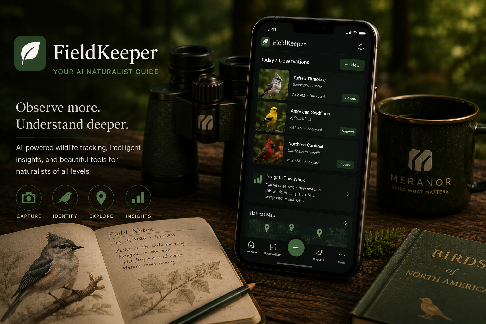
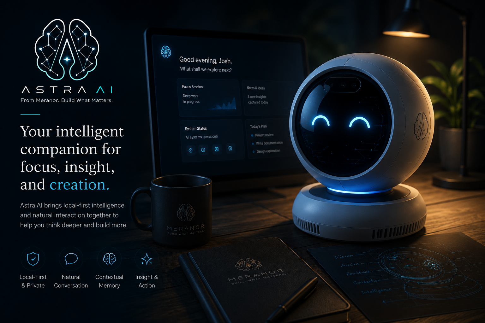
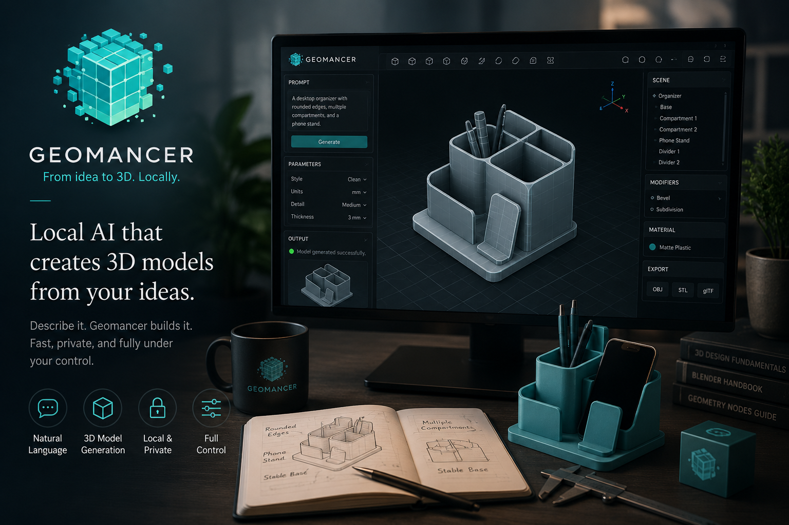
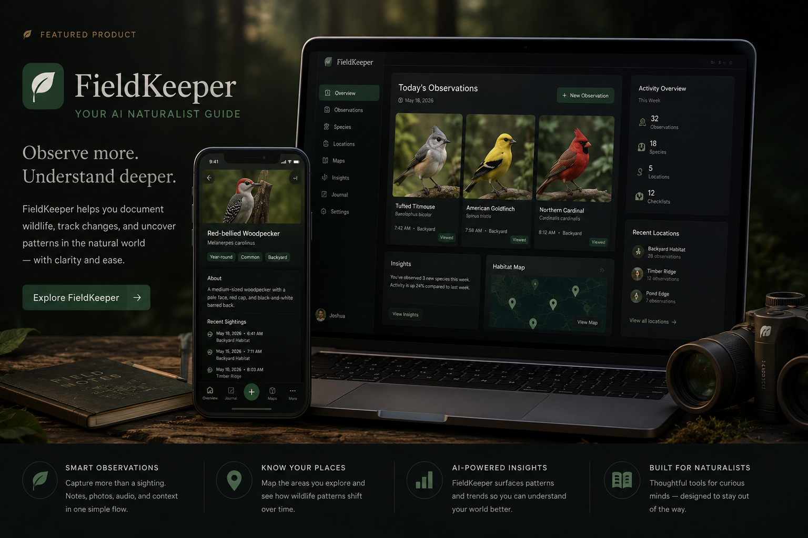
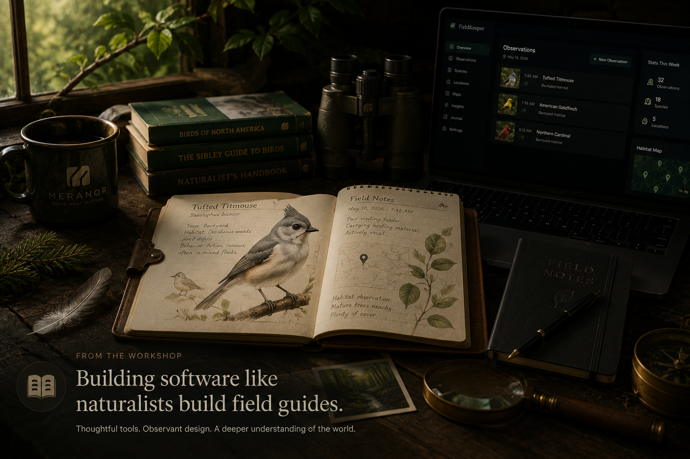
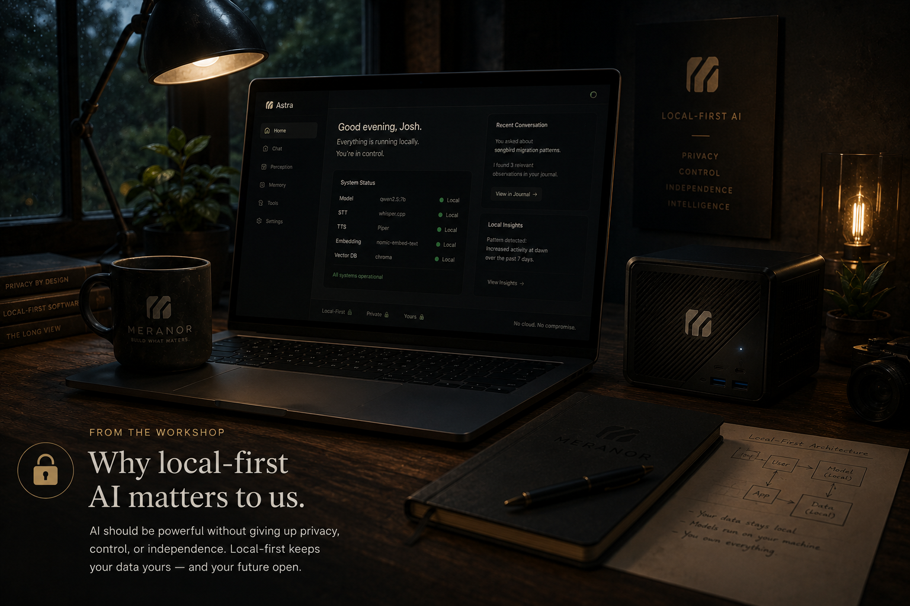

Planned flagship
FieldKeeper
A calm, intelligent field journal for discovering, recording, and understanding the natural world.
First flagship. In active design and development.

Thoughtful software for curious people
Build What Matters.
We create thoughtful software that helps people observe, create, and understand more.
What We're Building
Meranor is a parent software, AI, and technology company. The products below are shown honestly at their current stage of development.

Planned flagship
A calm, intelligent field journal for discovering, recording, and understanding the natural world.
First flagship. In active design and development.

In development
An intelligent personal AI companion designed to listen, see, learn, remember, and assist.
Exploratory work in progress. Not presented as a public release.

In development
A local-first AI-assisted tool for creating and iterating deterministic 3D models.
Built around controllable, repeatable creative workflows.
Early concept
Intelligent patch-management software for modern systems.
Concept-stage direction focused on clarity and operational confidence.
Internal development
Inventory reconciliation and reporting software designed to turn difficult exports into clear, actionable information.
In development for practical operations and internal workflows.

Featured Product
FieldKeeper is Meranor's first flagship in progress: a calm, intelligent field journal for discovering, recording, and understanding the natural world.
It is being shaped to help people notice more, identify what they are seeing, and return to their observations with enough context to uncover deeper patterns over time.
From the Workshop
Notes from the Meranor workshop as we shape thoughtful software, local-first AI systems, and product ideas worth building with care.

How FieldKeeper is shaped by careful observation, calm interfaces, and long-term pattern finding.

Why Meranor cares about privacy, resilience, ownership, and intelligence that stays close to the work.
The case for deliberate scope, durable decisions, and building useful systems without chasing noise.

A public build note for the first GitHub Pages release of the Meranor website.
Our Mission
Meranor builds software, AI, and technology intended to help people observe more, create with intention, and understand the world more clearly.
Meet our Founder, Josh!Our Principles
We start with purpose and act with clarity.
We use technology to solve meaningful problems.
We build with quality, craftsmanship, and long-term thinking.
We create solutions that help, inspire, and empower people to do more.